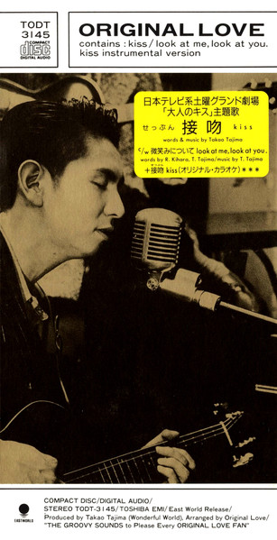
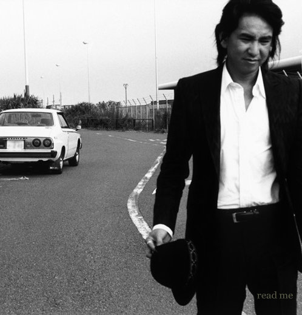
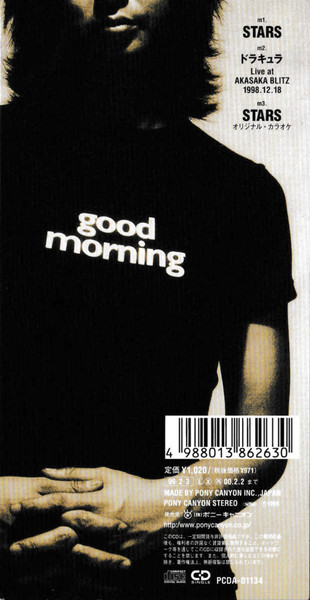
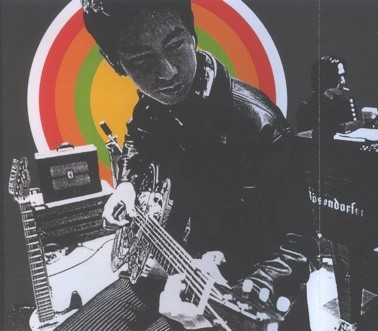
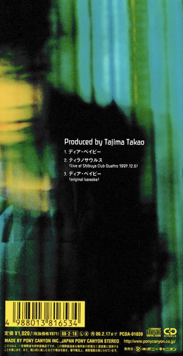
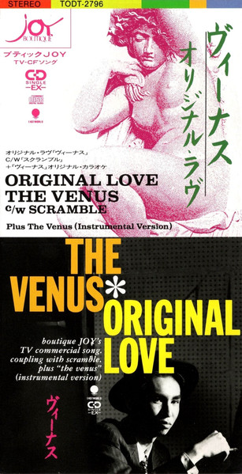
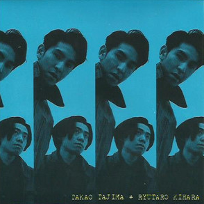
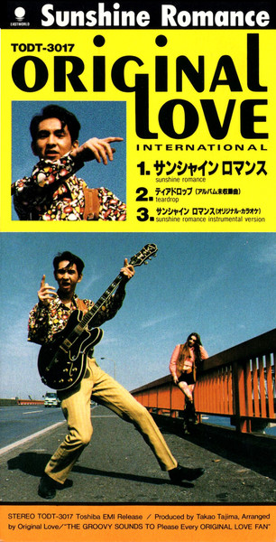
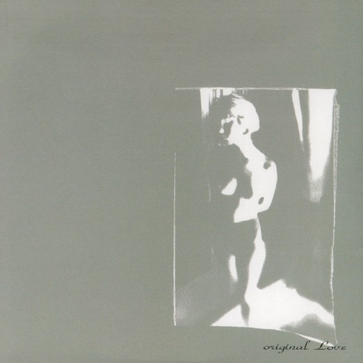
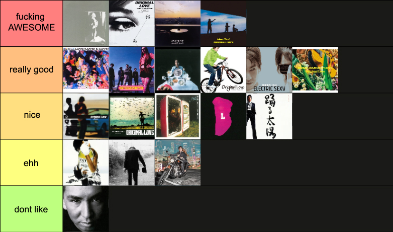

my favorite song from each album!

1993

2007

1999

1995

1998

1992

1992
discography review # 1
 original love
original love

i first heard of takao tajima when i stumbled upon pizzicato five's "bellissima" years ago. i absolutely fell in love with the voice of whoever was singing and after some reasearch i found out about his band original love, which would later on turn into his solo project. i loved it so much that at some point i decided to listen to all of the 19 albums he has released :P
i listened to all of these in chronological order, tried to take my time to appreciate each one and play them a few times, and after months (this guy is gonna be in my top played artists of the year for sure LOL) i think i can say original love is one of the most interesting artists i've ever found, if not the most... so this page is dedicated to his work! here is a review of probably one of the most fun, bizarre, eclectic and beautiful discographies out there...

the beggining
original love [1988]
the self released debut album, not available anywhere, found it on soulseek!! it's a very cute album, super different to the rest of his discography. i'm sure he hates this because of how amateurish it sounds but it's actually one of my favorites LOL. the mix is weird and muddy, i don't know japanese but i'm sure the lyrics are kind of silly, and it sounds like 20 years older than it actually is, but i still think its genuinely beautiful and his voice sounds so sweet! it just sounds like the band had a lot of fun while recording and making these songs. i think he was around 21 years old here? the energy and good vibes are super contagious!


the golden trio
love! love! & love! [1991]
soul liberation [1992]
eyes [1993]
certified bangers all over... the kind of music that if your parents heard they'd probably say they knew a song like that when they were young... this is the first i listened from original love after falling in love with pizzicato five and deciding to check out his discography. he starts trying out different singing styles in here (especially in EYES) which caught me off guard at first, since his very natural singing style w pizzicato is what i loved the most, but i still ended up really loving most of these songs. soul liberation is one of my favorite albums ever. these are apparently his most commercially successful works and it's easy to see why. i must say though, even when i love them, these albums aren't doing anything Crazy genre wise (except for a few songs here n there) it's just a classic city pop sound that i thought would stay with him throughout his whole discography. i couldn't have been more wrong lol


the transition
風の歌を聴け [1994]
rainbow race [1995]
desire [1996]
these three... they are alright i guess? not my personal favorites, a bit repetitive and not doing much, with the exception of a few songs that i like. he had been releasing albums every year for 6 years at this point (9 if you count his years in pizzicato five) and i feel like the burnout might have gotten to him lol. there is definitely a change in sound and vibe from the last three and an intention to do something new, but at the same time it doesn't really feel like he's truly commited to that? the style stays within his most popular works' range and at the same time feels weirdly disconnected from it. maybe he noticed this as well and that's why The Next Era happened....


the weird ones
eleven graffiti [1997]
L [1998]
big crunch [2000]
before listening to these, i couldn't have predicted how these albums would sound IN A BILLION YEARS. when the first song of "eleven graffiti" started my jaw dropped to the floor LOL. JUNGLE BREAKS? IN THE CITY POP GUY'S ALBUM? i think this era contains both the highest highs and the lowest lows of his entire career LOL. he does some very interesting things especially for the time, while also not really managing to fully master them and achieve a cohesive sound. lots and lots of weird samples, and by weird i mean what the hell was going through his mind when he thought of adding this here...? i mean this in a very positive way. or sometimes negative but i still really respect it lol. some of these samples are truly absurd... it's very crazy how atemporal these three albums sound. with late 90s albums i am usually able to connect or trace parallels with some sort of genre trend from the time, yet these albums sound like this dude was living in a different universe. impossible to place in time based on sound alone. it's the first time i have literally ZERO clue where the hell an artist gets his inspiration from and i absolutely respect him for that LOL. this is where original love stopped being a band and more takao tajima's solo project and it's very noticeable. and it's not only his sound that drastically changed but also his image... watched some videos and suddenly he looks like a whole rockstar, almost trying to erase his early colorful outfits and hair gel lol. love this dude and whatever was going through his mind these years.


back to the roots
moon stone [2002]
odoru taiyou [2003]
machiotoko machionna [2004]
after whatever was going on with the last three albums (positive) HE FINALLY TOOK A BREAK (of one year) and came back with three more year-consecutive albums. in these he revisits different parts of his old sound a little, with remains of the craziness that his three past albums were (but without the crazy samples). moon stone has some of my favorite songs out of his whole discography (in fact, syugo tenshi might be my favorite song of his) and in odoru taiyou there's a bit of the natural, sweet, powerful singing that i loved in pizzicato and his debut. you would've thought he would've settled on a singing style by now but these albums still sound like they were sang by different people LOL. feels like he wakes up one day and randomly decides what sort of singer he's going to be that day. some songs i absolutely love and some songs aren't my taste at all (mainly from odoru taiyou where he gets kinda... country??? i don't even know) but i'd say they're solid albums overall. less experimental but definitely more consistent than the last ones, with a more mature and defined sound... i like them, though i can't help but think that if he focused on releasing and perfecting only one album during these three years instead of rushing one album each year it would probably be the best one of his career :P

interlude
tokyo hikou [2006]
this is kind of a weird one which is why i separated it from the rest lol. it doesn't really fit into the flow of his discography if that makes sense? it sounds like he listened to a ton of western rock and folk music and really wanted to try making it himself lol. it's interesting because it's his only album w a noticeable influence in its sound but that's also kinda its weakness... it's alright just not doing too much for me. i love "yoru to ad - lib" though thats a fuckin banger


sure lets add synths
hakunetsu [2011]
electric sexy [2013]
very cool albums!! this is when he starts releasing music on his own label and also seemingly being a LOT more involved with the production. in "hakunetsu" he is credited for doing literally everything that isn't the cover. vocals, guitar, bass, saxophone, production, EVERYTHING!! maybe he took a break because he was learning to play every damn instrument on earth... i was a bit scared of the 2010s releases because i was afraid i'd get some really cheesy edm pop thing like it was popular in the era, but i started listening and i was reminded once again that no matter what sounds takao tajima experiments with, it won't sound like anything else i've heard. the way he incorporated electronic drums, basses and synths sounds refreshing and cool but still very much like him, and i love that he can consistently achieve that even years into his career. "electric sexy" is probably the first time he's actually commited to one sound throughout the whole album ever since the early 90s releases and i really enjoyed listening to something a bit more cohesive from him. feels like he really found his groove in this style. i love it so much wtf. his voice with autotune was not in my bingo card though LMAO it feels wrong...


original love 4 ever
lover man [2015]
bless you! [2019]
music, dance & love [2022]
i want to start by saying bless you! is such a perfect original love album... i feel like you can hear the essence of his early sound very clearly, but not in a way where it makes it sound outdated. it's clear from this album that he keeps up with newer music and isn't scared to incorporate new techniques into his music. the fact that he's still singing in these three albums as if he was still 20 years old also helps to make this album feel fresh, his vocals are as powerful as ever. his voice has changed for sure, but i can't believe he has the exact same energy and vocal range since the 80s LOL he is so fucking awesome!! oh my god!! i think with these albums he came back to the sound where he's the most comfortable in but not in a regressive way at all. it's an updated, new version of it. you can almost hear every sound he's experimented with over the years in the mix, some in more subtle ways than others, and it's beautiful. i don't like lover man that much though LOL but i do love bless you! and music, dance & love very much!! the last one in particular has something special in its melodies and chords that i cant quite pinpoint but that i really love.
conclusion
i can't believe i'm actually done now LOL... the end of a journey... the fact that he is still making and releasing music after 30 years is insane and it makes me so happy that he's been able to do so, since i don't think there's many artists that love making music as much as he does. he takes more time to release albums now (THANK GOD please take your time sir) but he's still doing shows and releasing singles super often and it shows that he's still having a good time whenever he's on stage. his good vibes and energy are as contagious now as they were in the 80s. the amount of passion he puts into his art is noticeable in any of the 19 albums he's released, and it is so inspiring. i'm almost emotional about it lol i guess it's not until you listen to someone's 20 album long discography that you truly realize how wonderful music can be... this is basically someone's whole life, growth and experiences that i've listened to and i'm honestly so glad i did even though i had literally no reason to. takao tajima i love and respect your work forever and i wish you only the best!!
